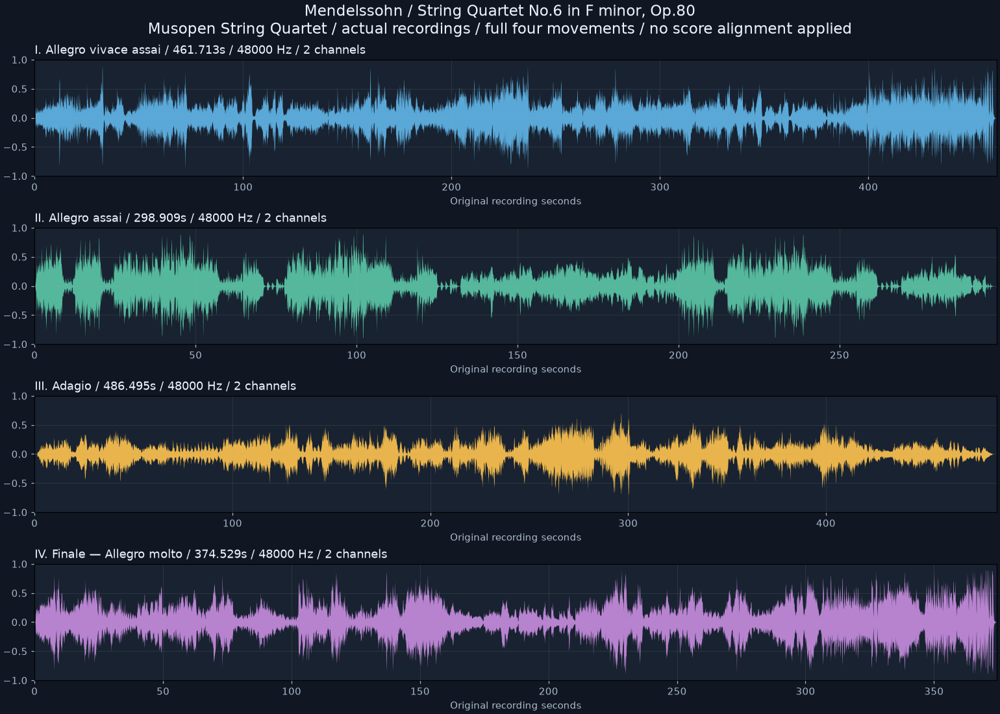

R/R RIBBON ROOM실험 기록 · 이전 결과를 보존한 검토 화면입니다. 새 그래픽 작업은 작업실에서 이어갑니다.
다른 실험 보기
B2.3 입력 준비 · 실제 녹음 확보
멘델스존 현악 사중주 6번, 실제 연주로.
Musopen String Quartet · Op.80 · 네 악장 전체. 내려받은 FLAC 원본을 보존하고, 이 화면에서는 같은 연주의 MP3 청취본을 제공합니다.
현재는 실제 녹음 확인 화면입니다. 리본의 악보 시간과 실제 연주 시간 정렬은 아직 하지 않았습니다. 다음 리본 적용은 이 실제 녹음의 구간 대응 확인부터 진행합니다.
I. Allegro vivace assai
7:42 · 48,000 Hz · 2채널 · FLAC 원본 76.7 MB
녹음·라이선스 출처 ↗
II. Allegro assai
4:59 · 48,000 Hz · 2채널 · FLAC 원본 48.1 MB
녹음·라이선스 출처 ↗
III. Adagio
8:06 · 48,000 Hz · 2채널 · FLAC 원본 77.3 MB
녹음·라이선스 출처 ↗
IV. Finale — Allegro molto
6:15 · 48,000 Hz · 2채널 · FLAC 원본 63.0 MB
녹음·라이선스 출처 ↗
네 악장 전체 파형과 파일 검증

녹음 출처 페이지는 Musopen의 퍼블릭 도메인 공개를 명시합니다. 기존 OpenScore 전체 MXL(CC0)과 네 파트 악보는 보존했습니다. 이 녹음에는 음표별 정답 시간 주석이 포함되어 있지 않습니다.
원본 해시·음질·길이 · 다운로드 주소·출처 · 검증 결과 · 확보 기록
합성·속도 변경·악기 분리 없이 실제 합주 녹음을 사용합니다. 각 플레이어는 독립된 악장입니다.